Copias de seguridad y sistema de réplica
En esta práctica, trabajaremos con varias máquinas para gestionar las copias de seguridad (incrementales y completas) y como guardar un sistema de réplica en MySQL.
Restricciones: No se puede utilizar scp, ftp ni herramientas similares para transferir datos entre máquinas.
Escenario

Máquina 1-Master (Base de datos principal - tattoo)
sudo apt update
sudo apt install mysql-server rsync
sudo systemctl enable mysql
sudo systemctl start mysql
Vamos a permitir a MySQL aceptar conexiones desde cualquier dirección IP, haciéndolo accesible desde cualquier lugar.
sudo nano /etc/mysql/mysql.conf.d/mysqld.cnf

Restauramos.
sudo systemctl restar mysql.service
Creamos el usuario "edu1" para el server-master.
CREATE USER 'edu1'@'%' IDENTIFIED BY '123';
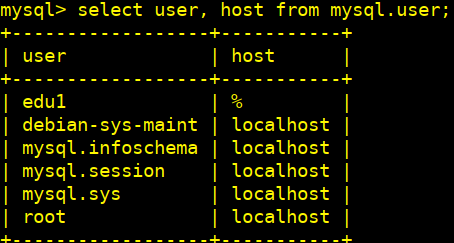
Una excelente práctica de seguridad y conveniencia es almacenar el usuario y la contraseña de MySQL en un archivo .my.cnf para evitar tener que especificarlos explícitamente en la línea de comandos con -u y -p. Esto previene que las contraseñas se muestren en la pantalla, lo cual es un riesgo de seguridad.
Crearemos el archivo .my.cnf
Una vez que el usuario está creado y tiene los privilegios necesarios, entonces crearemos el archivo .my.cnf en el directorio home del usuario del sistema y le damos los permisos correspondientes.
cd ~
sudo nano .my.cnf
[client]
user=edu1
password=123

sudo chmod 600 .my.cnf
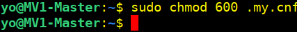
Asignamos en esta práctica al nuevo usuario para la BBDD con todos los privilegios.
GRANT ALL PRIVILEGES ON tattoo.* TO 'edu1'@'%';

Restauramos la BBDD tattoo desde un archivo SQL
sudo mysql < tattoo.sql

Comprobamos.

Configuramos acceso SSH desde la Máquina 1 a la Máquina 2
En la Máquina 1, generamos clave SSH.
ssh-keygen -t rsa -b 2048

Copiamos la clave pública a la Máquina 2
ssh-copy-id yo@192.168.122.22

Creamos los directorios temporales home en la Máquina 1 (master) para almacenar las copias
mkdir /home/yo/bkptattoo
mkdir /home/yo/bkptattoo/incrementales
mkdir /home/yo/bkptattoo/completa

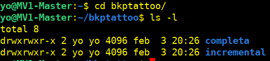
Máquina 2-Server-almacenamiento-restauración
sudo apt update
sudo apt install mysql-server openssh-server rsync gzip -y
sudo systemctl enable mysql
sudo systemctl start mysql
sudo nano /etc/mysql/mysql.conf.d/mysqld.cnf
Restauramos.
sudo systemctl restar mysql.service
Creamos el usuario "edu2" para el server-restauración.
CREATE USER 'edu2'@'%' IDENTIFIED BY '123';

Crearemos en máquina 2 el archivo .my.cnf
cd ~
sudo nano .my.cnf
[client]
user=edu2
password=123

sudo chmod 600 .my.cnf
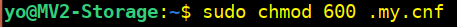
Crearemos los directorios en nuestro home en la Máquina 2 para las copias
mkdir /home/yo/bkptattoo
mkdir /home/yo/bkptattoo/incrementales2
mkdir /home/yo/bkptattoo/completa2
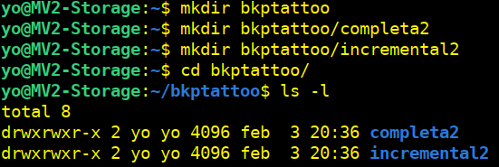
1.Configuración de copias de seguridad a la “máquina 1”
1.1.Configuramos las copias incrementales diarias
Creamos el script del backup incremental
Podemos ver el archivo.sh aquí
Damos permisos de ejecución al script:
`sudo chmod +x /home/yo/script_incremental.sh

Configuramos la tarea cron para ejecutar el script a las 23:00

crontab -e
Añadimos esta línea al archivo cron
0 23 * * * /home/yo/script_incremental.sh >> /var/log/backup_incremental.log 2>&1

Ejecutamos el script de la copias incrementales manualmente para comprobar su funcionamiento
Usaremos el programa ssh-agent para que mantenga las claves privadas en memoria para que no tengamos que ingresar la frase de contraseña cada vez que ejecutemos el script.
Iniciamos.
eval "$(ssh-agent -s)"
Añadimos la calve privada a ssh-agent, con lo que nos pedirá la frase de nuestra contraseña.
ssh-add /home/yo/.ssh/id_rsa
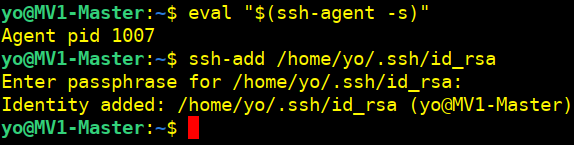
Finalmente ejecutamos nuestro script.
/script_incremental.sh

Comprobamos la transferencia a la máquina 2

1.2.Configuramos las copias completas semanales
Creamos un script para las copias completas
Podemos ver el archivo.sh aquí
Damos permisos de ejecución al script:
`sudo chmod +x /home/yo/script_completa.sh

Configuramos la tarea cron para ejecutar el script cada domingo a las 23:59
crontab -e
Añadimos esta nueva línea al archivo cron
59 23 * * 0 /home/yo/script_completa.sh >> /var/log/backup_completa.log 2>&1

Ejecutamos el script de la copias completas semanales manualmente para comprobar su funcionamiento
Ejecutamos el script.
./script_completa.sh

Comprobamos la transferencia de la copia completa a la máquina 2

Comprobamos en la imagen anterior que después de la transferencia a la máquina 2 nuestro script nos elimina la copia de la máquina 1 para no tener acumulación de copias completas.
2.Transferimos solo la estructura de la BBDD (máquina 1)
sudo mysqldump --no-data tattoo > estructura_tattoo.sql
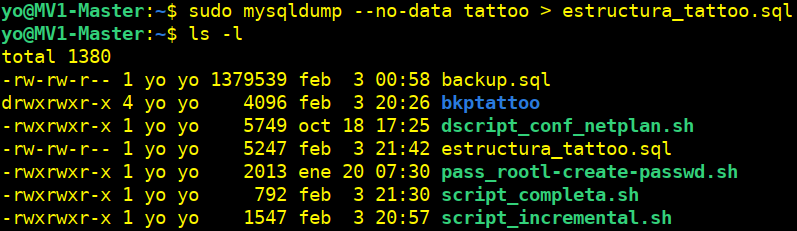
Transferimos con rsync el archivo a “máquina 2”.
rsync -avz estructura_tattoo.sql yo@192.168.122.22:/home/yo/bkptattoo/

2.1. Verificamos en máquina 2
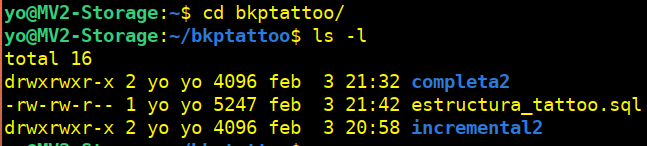
En la Máquina 2, restauramos la estructura en MySQL, creando la BBDD previamente.
sudo mysql -e "CREATE DATABASE tattoo;"
sudo mysql tattoo < /bkptattoo/estructura_tattoo.sql

2.2. Verificamos que la estructura se importó correctamente
sudo mysql
use tattoo;
show tables;

2.3. Realizamos un estudio de la estructura de la BBDD
DESCRIBE artista;

3. Transferencia y restauración de datos
3.1. Exportamos solo los datos de la BBDD tattoo y los importamos en la "máquina 2" después de una semana
Desde la máquina 1, ejecutamos:
sudo mysqldump --no-create-info tattoo > tattoo_datos.sql

Transferimos el archivo tattoo_datos.sql usando rsync, eliminando el archivo en la máquina de origen después de la transferencia, con --remove-source-files
rsync -avz --remove-source-files tattoo_datos.sql yo@192.168.122.22:/home/yo
Usaremos nuevamente el programa ssh-agent para que mantenga las claves privadas en memoria para que no tengamos que ingresar la frase de contraseña cada vez que ejecutemos el script.
Iniciamos.
eval "$(ssh-agent -s)"
Añadimos la calve privada a ssh-agent, con lo que nos pedirá la frase de nuestra contraseña.
ssh-add /home/yo/.ssh/id_rsa
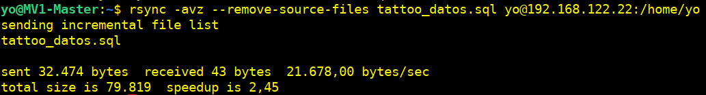
Verificamos la transferencia en la máquina 2.

3.2. Añadimos una tabla nueva llamada caja en la "máquina 2"
sudo mysql
CREATE TABLE caja (id INT AUTO_INCREMENT PRIMARY KEY, cantidad INT NOT NULL);
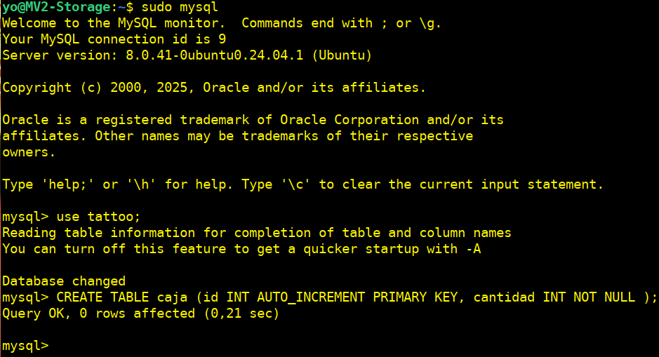
Verificamos la creación de la tabla

4. Recuperamos desde un punto concreto
4.1 Borramos accidentalmente la tabla tattoo en la "máquina 2"
mysql -u usuario -p -e "DROP TABLE tattoo.tatuajes;"

Verificamos la eliminación de la tabla tattoo

4.2. Recuperaremos la base de datos desde la operación previa al borrado de la tabla
4.2.1.-En la Máquina 2 restauraremos la estructura para que nos de error por la falta de la tabla tattoo que hemos borrado
sudo mysql tattoo < bkptattoo/estructura_tattoo.sql
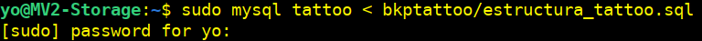
Comprobamos.

4.2.2.-Importamos los datos
sudo mysql tattoo < /home/yo/tattoo_datos.sql

5. Configuraremos un esclavo en la "máquina 3"
sudo apt update
sudo apt install mysql-server -y
sudo systemctl enable mysql
sudo systemctl start mysql
5.1 Configuraremos la "máquina 3" como esclavo de la "máquina 1"
Editaremos el archivo de configuración /etc/mysql/mysql.conf.d/mysqld.cnf
sudo nano /etc/mysql/mysql.conf.d/mysqld.cnf
Reiniciamos.
sudo systemctl restar mysql.service
5.2 En la "máquina 1" (servidor maestro), editaremos el archivo de configuración /etc/mysql/mysql.conf.d/mysqld.cnf y añadiremos
sudo nano /etc/mysql/mysql.conf.d/mysqld.cnf
[mysqld]
server-id=1
log_bin=/var/log/mysql/mysql-bin.log
binlog_do_db=tattoo

Reiniciamos.
sudo systemctl restar mysql.service
5.3 Crearemos en la "máquina 1"un usuario replicador
sudo mysql
ALTER USER 'replicador'@'%' IDENTIFIED WITH mysql_native_password BY '123';
GRANT REPLICATION SLAVE ON *.* TO 'replicador'@'%';

Comprobamos.
SELECT user, host, plugin FROM mysql.user WHERE user='replicador'

Obtenemos el estado del binlog, pues nos hará falta más adelante:
SHOW MASTER STATUS;
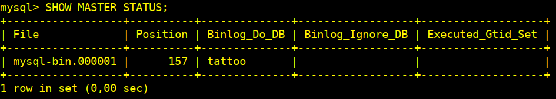
5.4 En la "máquina 3" (servidor esclavo), editaremos /etc/mysql/mysql.conf.d/mysqld.cnf y añadiremos
[mysqld]
server-id=2
relay-log=/var/log/mysql/mysql-relay-bin.log
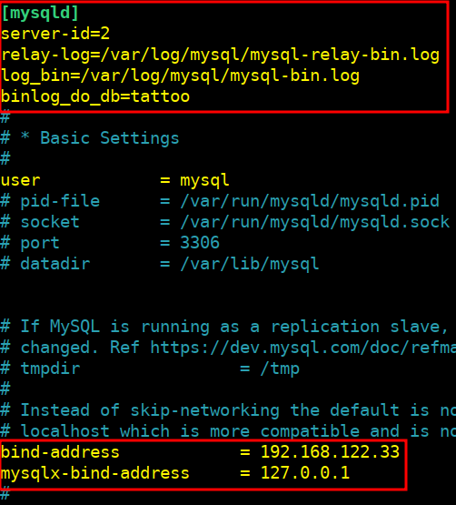
Reiniciamos.
sudo systemctl restar mysql.service
5.5 Configuraremos el esclavo con los datos del maestro
sudo mysql
CHANGE MASTER TO
MASTER_HOST='192.168.122.11',
MASTER_USER='replicador',
MASTER_PASSWORD='123',
MASTER_LOG_FILE='mysql-bin.000001',
MASTER_LOG_POS=157;
START SLAVE;
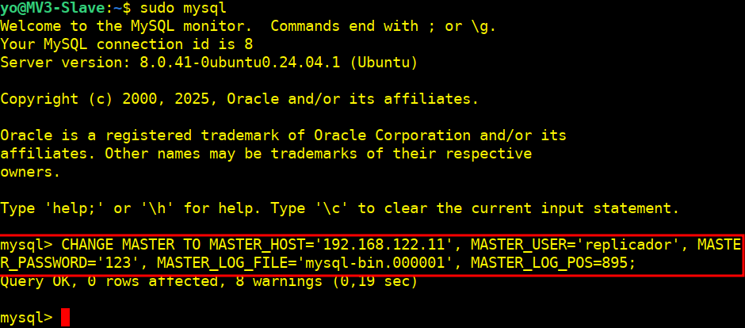
Verificamos el estado de la replicación.
SHOW SLAVE STATUS\G
Si todo está bien, deberemos ver:
Slave_IO_Running: Yes
Slave_SQL_Running: Yes